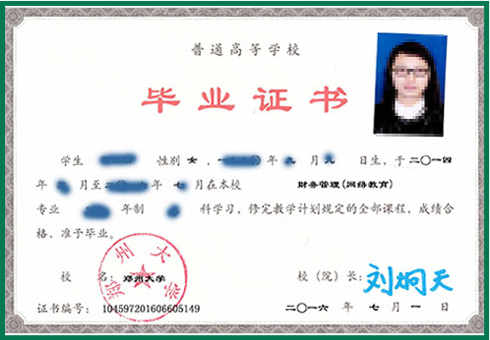

招生对象及报名条件
各级各类行政干部、国家公务员、教师、其他行业的在职从业人员、社会青年、待业人员等；
报考专科起点本科，须具有国民教育系列专科或专科以上学历；报考高中起点专科，应具有高中(含职高)、中专学历或同等学历；
报考医学类相关专业的考生必须是已取得卫生类执业资格的在职人员，报名时考生需携带卫生类执业资格证或初级以上( 含初级 )卫生类职称证原件和复印件；
报考护理学专科的考生，须持有护理学中专毕业证或护士证；
限广东户籍考生报考；
郑州大学是国家教育部公布的世界一流大学和一流学科建设高校、国家“中西部高校提升综合实力计划”入选高校，是河南省人民政府与国家教育部共建高校，是一所涵盖理学、工学、医学、文学、历史学、哲学、法学、经济学、管理学、教育学、农学、艺术学等12大学科门类的综合性大学，学校师资力量雄厚，办学条件优越。2002年2月，经教育部批准为国家开展现代远程教育试点学校。现采取自主招生的方式，面向社会招收现代远程教育本、专科层次的学历教育学生。
各级各类行政干部、国家公务员、教师、其他行业的在职从业人员、社会青年、待业人员等；
报考专科起点本科，须具有国民教育系列专科或专科以上学历；报考高中起点专科，应具有高中(含职高)、中专学历或同等学历；
报考医学类相关专业的考生必须是已取得卫生类执业资格的在职人员，报名时考生需携带卫生类执业资格证或初级以上( 含初级 )卫生类职称证原件和复印件；
报考护理学专科的考生，须持有护理学中专毕业证或护士证；
限广东户籍考生报考；
由郑州大学自主命题并组织入学考试，由高分到低分择优录取
凡具有国民教育系列本科及以上学历者，可免试参加专科起点本科学习
凡具有国民教育系列专科及以上学历者，可免试参加高中起点专科学习
学员在规定的修业年限内，修完本专业教学计划规定的全部课程，成绩合格，本科须通过教育部组织的公共基础课统一考试，毕业资格审查合格，颁发国家承认学历、教育部电子注册的郑州大学毕业证书（加注网络教育）。符合郑州大学成人高等教育学士学位授予条件的本科毕业生，可自愿申请并通过校学位委员会批准，授予成人高等教育学士学位。
郑州大学现代远程教育采用"自主学习教材+ 点播课件 + 网上答疑 + 在线自测 + 网上讨论 + 考前辅导 + 集中考试 + 毕业实践"的教学模式。学生自主学习教材，登陆学习平台点播网络课件和获取网上教学资源，参与网上视频答疑、课程讨论，完成在线测试和网上作业，参加当地学习中心组织的课程结业考试和毕业实践等教学环节。 实行弹性学制，学生可自行安排学习进度，学习形式自主、灵活。在任何时间和地点，学生都可通过互联网访问我院学习平台进行学习。
注： 模拟题请查询"郑州大学远程教育学院网(http://dls.zzu.ed u.cn)"主页招生专栏中"模拟试题"；
学习年限：以注册日期为准算起；

报名手续：考生持本人身份证、毕业证书原件及复印件各1份，近期小二寸同版蓝底彩色免冠照片 2 张，审验报名资格，参加入学资格测试 ；
报名截止时间：请咨询当地校外学习中心；
